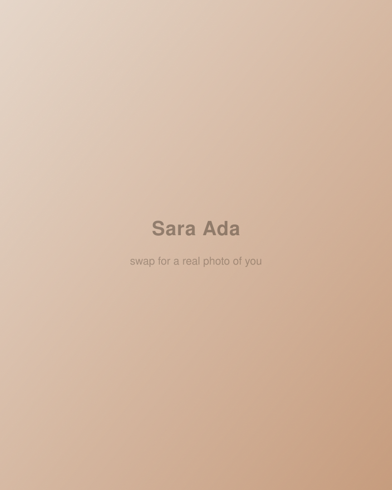

Photography & Creativity
I photograph
Broadway Haven, trips to Tanzania and France, and this city I now call home — organized by project. Scroll down, or jump right in.
Projects
Map base: Crates, Wikimedia Commons, CC BY-SA 4.0


About
I'm Sara Ada — a medical student and biological engineer from Boston, now living in NYC for school. I enjoy slowing down and seeing the world through the lens of my camera: sometimes a Canon T6i for a project, but mostly my iPhone, just capturing the city for fun.
Outside of photography, I enjoy cooking and baking in my mini-kitchenette, designing my small space, and studying medicine. I hope to use photography to better understand the world and people's stories — and to use medicine to do the same.
Before any of this, I ran a couple of YouTube channels in high school. Here's the old video portfolio, if you're curious where it started.
Say hi
Open to projects — or just reach out.
you@example.com